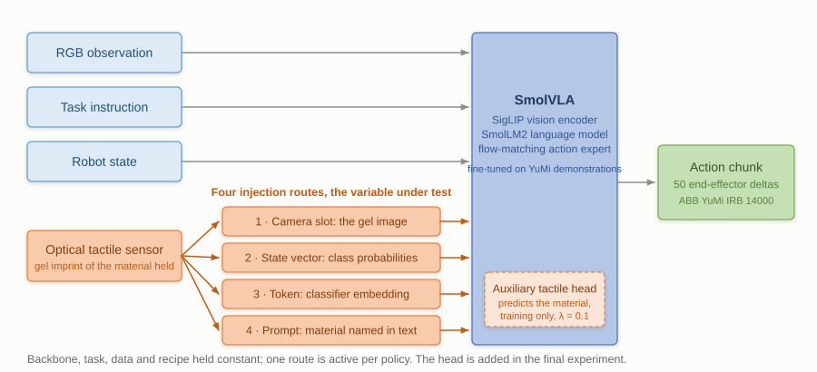

Robot learning · MSc dissertation
Comparing three ways of giving a pretrained VLA access to touch
Pretrained VLAs are trained on vision and language. There is no settled answer on how to give one a tactile signal, so I'm comparing three ways of doing it on a task where touch should matter.

In progressThe question
A vision-language-action model maps what the robot sees and what it has been told into what it should do next. The pretrained ones are trained on vision and language, because that's what there is a lot of. Touch is different: there's far less of it, it's sensor-specific, and it doesn't arrive in a format the backbone was built to read.
So there's a choice about how to present it, and it's usually settled by convention rather than tested. You can render the tactile reading as an image and push it through the vision encoder, which is convenient because optical-tactile sensors produce images anyway. You can describe the contact in words and let the language side carry it. Or you can train a dedicated encoder and give the backbone a representation built for the job.
Each has an argument for it, and the comparison is about which one a pretrained model can actually use.
The task
Cloth folding on an ABB YuMi, with the target being fold-direction selection by material. I picked it because vision alone is not enough. Two fabrics can look near-identical and behave completely differently under the gripper, and which way a fold wants to go depends on properties you find out by touching. If tactile input is doing anything, it should show up here.

How it is set up
- An optical-tactile sensor as the touch source, so the raw signal is an image and all three encoding routes start from the same data.
- LoRA fine-tuning on the pretrained backbone, which keeps the comparison affordable and stops the base model being overwritten by a small tactile dataset.
- SmolVLA and OpenVLA as the candidate backbones.
- Evaluation split by material, since a result that only holds on one fabric wouldn't generalise.
Where it stands
Before the comparison, I fine-tuned SmolVLA on a single consumer GPU for a YuMi cloth-folding task, which convinced me the pipeline was workable at this scale. OpenVLA gave mixed results on the same problem, and the reason looks like a mismatch between its discretised action representation and the continuous control the arm wants. That shaped the current setup.
The comparison itself is running now. I'll put the results here when I have them.
← All projects